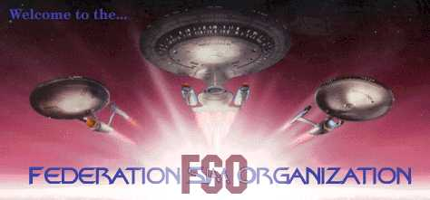
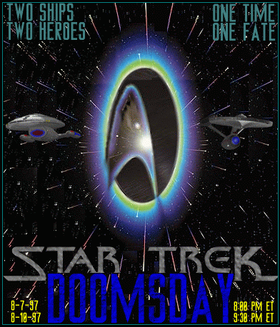

Welcome to FSO...
Welcome to the Federation Sim Organization, Our pages our in the process of being revamped so please bear with us. In order to view these pages properly you need a frames capable browser, ie Netscape Navigator 3.0 or Mircosoft Explorer 3.0. If you have a frames capable browser click on the 'Start' button below. For all of you with a non frames capable browser, dont fret, a non frames version will be on its way shortly after we are finished.

Rear Admiral Karrde, and President Pike, present the greatest cross over in history. Two Ships form different times, meet, to save the universe, at all cost. Now the USS Yorktown-A and USS Chimera-A, meet for the first time, and maybe for the last? You will have to be there! It starts Thursday 7th, at 8:00 pm on FSO net in in #USS-Chimera, then ends Sunday the 10th, on FSO Net in #USS-Yorktown at 9:30 pm ET.